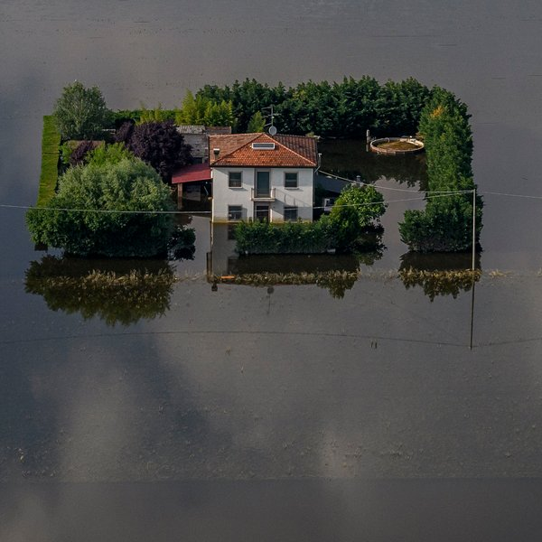
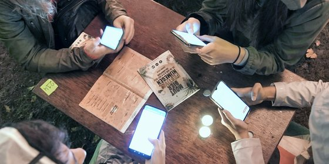
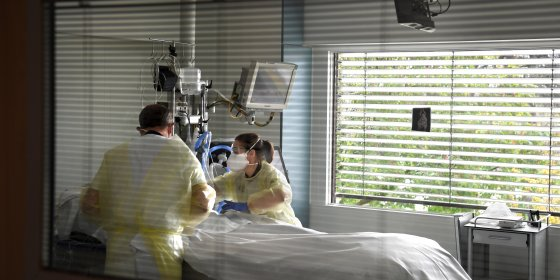

 Analyse Het was de warmste zomer ooit. wat gebeurde er precies?  Interview Criminoloog Frank Weerman ziet een verband tussen smartphone gebruik en daling jeugd criminaliteit  Nieuws De Nederlandse ic's zijn ongekend leeg: 'We hebben het nog nooit zo rustig gehad'